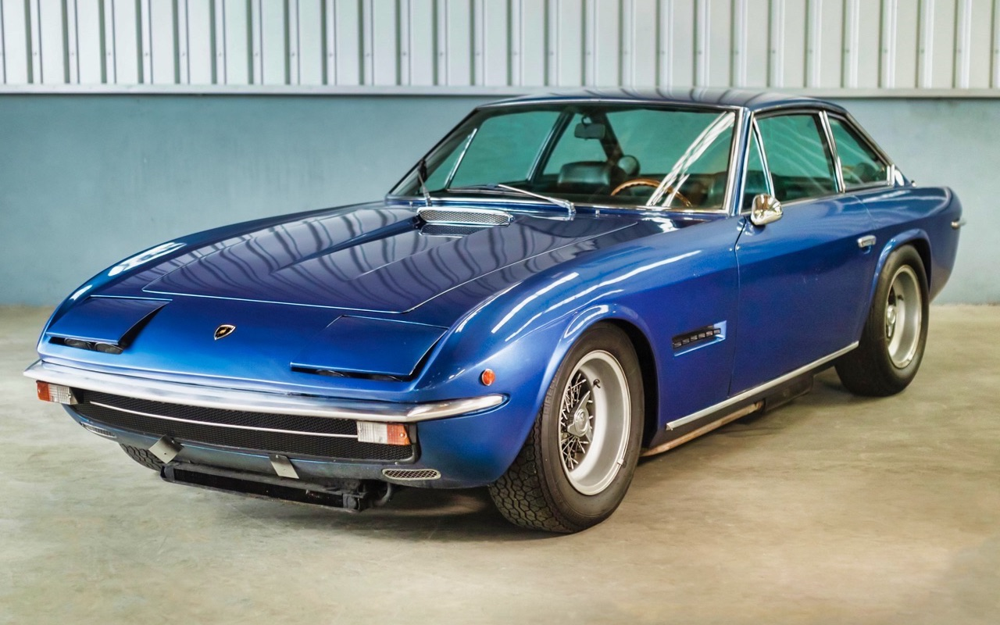
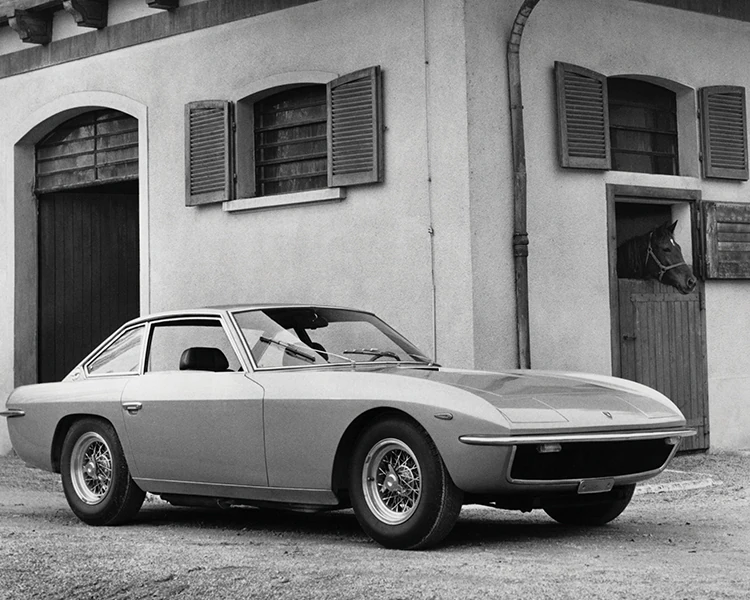

islero


La Lamborghini Islero, également appelée Islero 400 GT,
est un modèle du constructeur automobile italien Lamborghini.
Présentée lors du Salon international de Genève en mars 1968, elle remplace la Lamborghini 400 GT 2+2.
Le nom d'« Islero » est attribué en référence au taureau qui a tué dans l'arène
le fameux matador Manolete en 1947
La naissance de la Lamborghini Islero coïncide avec la fermeture de la société de carrosserie Touring.
Cette dernière, en proie à des difficultés financières croissantes et mise sous contrôle administratif en 1963,
ferme définitivement le 31 janvier 1967. Pour poursuivre la production de ses modèles, Ferruccio Lamborghini s'adresse alors à la carrosserie Marazzi,
une entreprise industrielle reprise par des anciens collaborateurs de Touring. C'est ainsi que l'Islero sera carrossée par Marazzi1
L'Islero était propulsé par un moteur V12 de 4,0 litres, qui produisait environ 325 à 350 chevaux, selon la version. Le moteur était couplé à une transmission manuelle à 5 vitesses.
Bien qu'elle ne soit pas aussi agressive ou performante que certains autres modèles de Lamborghini, l'Islero était néanmoins capable de performances impressionnantes pour l'époque. Il pourrait atteindre une vitesse de pointe d’environ 155 mph (250 km/h).
L'intérieur de l'Islero était luxueux, offrant des sièges confortables et des matériaux de haute qualité. Il a été conçu pour offrir un haut niveau de confort tant au conducteur qu’aux passagers.
Lamborghini a produit deux variantes de l'Islero. L'Islero original a été produit entre 1968 et 1969, et il a été remplacé par l'Islero S, qui présentait quelques améliorations et mises à niveau, en particulier au niveau du moteur.
La Lamborghini Islero est appréciée pour son design classique et intemporel. Même s'il n'est peut-être pas aussi célèbre que certains autres modèles de Lamborghini, il a sa propre place dans l'histoire de la marque et est considéré comme un objet de collection pour les amateurs de voitures classiques.
On se souvient de la Lamborghini Islero comme d'une voiture classique sophistiquée et discrète qui représente une facette différente de la philosophie de conception et de performance de Lamborghini. Son importance historique et son style unique en font une pièce de collection recherchée par les amateurs de voitures classiques.